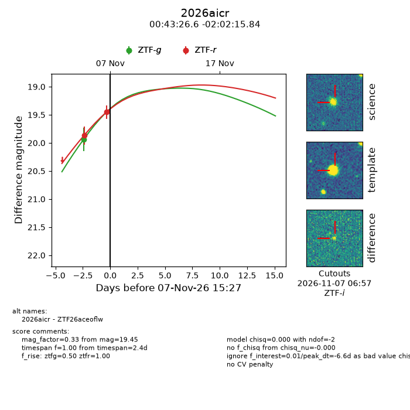
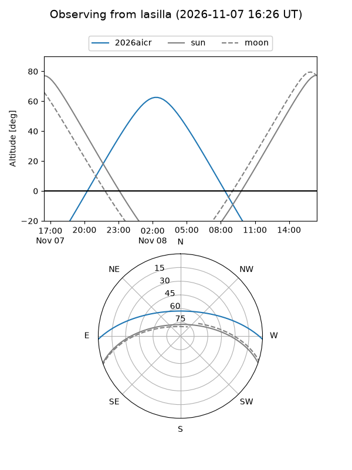
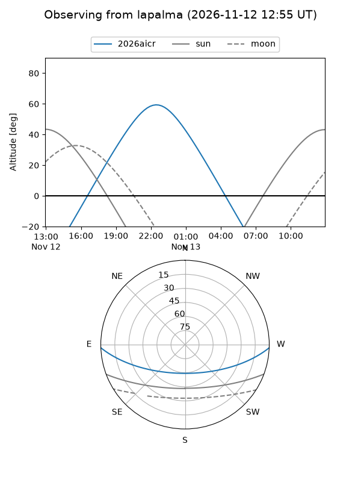
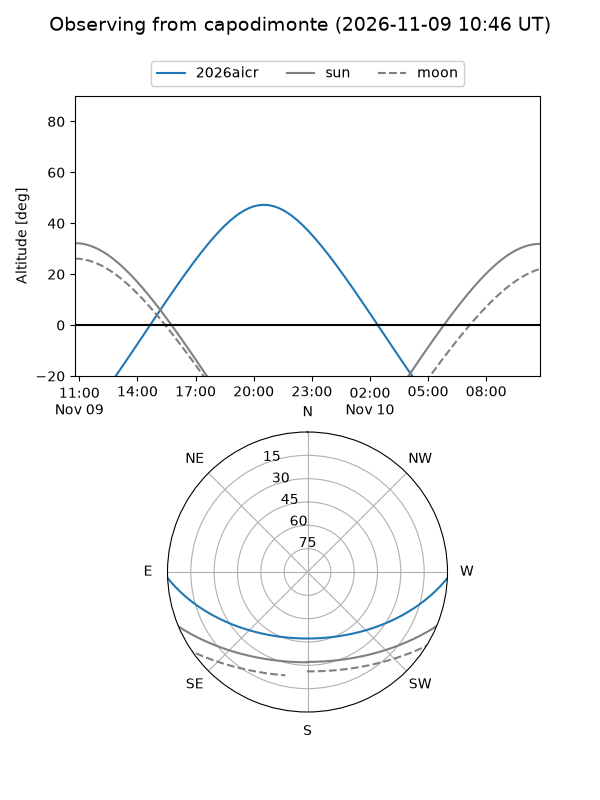
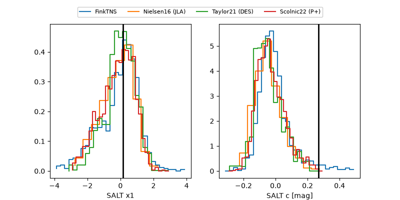

2026aicr
Target 2026aicr at 2026-11-07 15:29
Aliases and brokers:
FINK-ZTF: ztf.fink-portal.org/ZTF26aceoflw
Lasair-ZTF: lasair-ztf.lsst.ac.uk/objects/ZTF26aceoflw
ALeRCE-ZTF: alerce.online/object/ZTF26aceoflw
YSE-PZ: ziggy.ucolick.org/yse/transient_detail/2026aicr
TNS name: wis-tns.org/object/2026aicr
Direct TNS query: direct search
alt names
ZTF26aceoflw (ztf,fink_ztf)
2026aicr (tns,yse)
Coordinates:
equatorial (ra, dec) = 10.8609,-2.03773
equatorial (HMS+DMS) = 00:43:26.62,-02:02:15.84
galactic (l, b) = (118.2304,-64.83648)
Flags:
peak dt: -6.6
Photometry:
last ztfg=19.94, ztfr=19.45
1 ztfg, 2 ztfr detections
Lightcurve

Visibility



Additional plots
